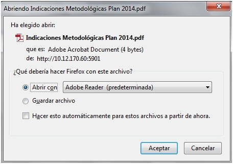

Figura 1.Interfaz Definir presupuesto de anteproyecto.
Figura 1.Interfaz Definir presupuesto de anteproyecto.--Definir presupuesto de anteproyecto--
Para llegar a esta funcionalidad se puede acceder a través de la opción Inicio\Planificación material/Presupuesto/Definir Anteproyecto de presupuesto. Una vez seleccionada la funcionalidad, aparecerá en pantalla la interfaz de la misma, donde el usuario autenticado podrá realizar las acciones que desee, en correspondencia con el acceso que tenga definido, ver figura 1.
Figura 1.Interfaz Definir presupuesto de anteproyecto.
Nota: NAE: Si es un P2 muestra cantidad de NAE que tienen P2.1. Si es un P2.1 muestra la denominación del NAE asociado al documento.
Generar documento P2.1
Se selecciona clic derecho sobre un NAE y se presiona la opción Generar P2.1, ver figura 2. Se crea el documento en el panel derecho Gestionar documentos.

Figura 2. Interfaz Acción generar P-2.1.
Generar documento P2
Se selecciona clic derecho sobre una entidad del árbol y se selecciona la opción Generar P2, ver figura 3.

Figura 3. Interfaz Acción generar P-2.
Ver documento
Para acceder a la funcionalidad Ver documento deberá seleccionar un documento y presionar la opción Ver documento, ver figura 1. Seguidamente el sistema muestra la interfaz Datos del documento, ver figura 4.

Figura 4. Interfaz Datos del documento.
En la interfaz anterior se muestran los datos del documento y se puede modificar los siguientes campos: Ejecución año anterior, Estado año actual de los recursos financieros y Objeto de gasto presionando clic sobre cada uno de estos campos e introduciendo nuevos datos, se presiona el botón Guardar y el sistema guarda los cambios.Si lo desea puede exportar el documento, ver Exportar.
Exportar
Se selecciona la opción Exportar de la interfaz, ver figura 4. El sistema muestra la interfaz Abriendo documentos con dos opciones como se muestra en la figura 5, se selecciona la opción Abrir con y el sistema muestra el resultado de la exportación en formato pdf de forma predeterminada sin guardar el archivo. Si selecciona Guardar archivo y da clic en el botón Aceptar: Deberá seleccionar la carpeta donde desea guardar el archivo y el archivo en formato pdf será guardado en la carpeta escogida. Si selecciona el botón Cancelar: Se cierra la ventana de la figura 5 sin que se ejecute la acción.
